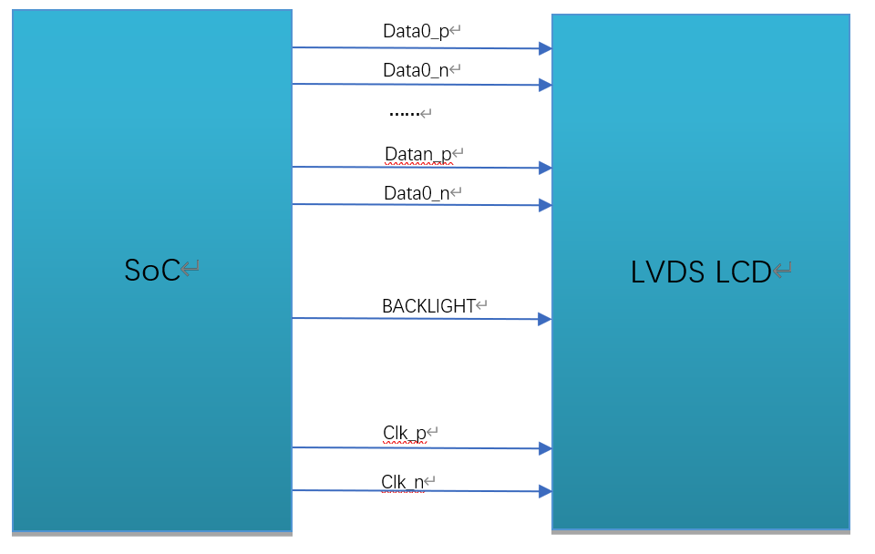

3. LVDS¶
概述
Low Votage Differential Signal(LVDS)，即低电压差分信号。LVDS接口又称RS644总线接口，1994年由美国国家半导体公司（NS）提出的为克服以TTL电平方式传输宽带高码率数据时功耗大、EMI电磁干扰大等缺点而研制的一种视频信号传输模式，是一种电平标准，广泛应用于 液晶屏接口。LVDS屏总体和MIPI类似，但是还有一些区别。本章节介绍如何在CVITEK处理器解决方案上开发调试LVDS LCD 屏。
3.1. 环境准备¶
3.1.1. LVDS屏幕接口介绍¶
LVDS屏幕一般有以下几种信号，如图所示。
LVDS 时钟线（CLK）
LVDS数据线（DATA）（单路6bit：3 lane， 单路8bit：4 lane，单路10bit：5 lane，双路6bit：6 lane，双路6bit：8 lane，双路6bit：10 lane，目前仅支持单路6bit和单路8bit）
背光控制信号（BACKLIGHT）
LVDS 接口连线示意图
{kind=link}

3.1.2. 硬件连线确认¶
检查硬件连线，确认无异常。具体有些引脚差异，需对照屏幕厂商提供的规格书及电路原理图确认。
3.2. 配置LVDS屏¶
根据上节环境准备的内容，在接口和连线上了解了屏幕对接的配置，在这一节中将对屏幕对接时在软件方面需要进行的配置进行说明。
CVITEK 有两种方案进行LVDS屏幕的对接，和MIPI 屏类似，分别是在u-boot及kernel中进行屏的初始化。实际应用中根据需求二者选其一。
3.2.1. 在u-boot中配置LVDS屏¶
u-boot中配置MIPI屏是通过CVITEK开发的showlogo命令，设备上电后，敲回车进入u-boot命令行，printenv可以看到showlogo命令，bootcmd在引导内核之前会执行该命令进行屏的初始化并显示logo。
示例：
showlogo=mmc dev 0;mmc read 0x84080000 0xA000 0x400; cvi_jpeg 0x84080000 0x81800000 0x80000; startvo 0 2048 0;startvl 0 0x84080000 0x81800000 0x80000 16;setvobg 0 0xffffffff
注：单路6bit为1024， 单路8bit为2048，单路10bit为4096。
本文档重点讲解屏的初始化部分，显示logo具体请参考《CVITEK开机画面使用指南》。其中，屏的初始化部分在“startvo 0 2048 0”中实现。
3.2.1.1. 配置LVDS设备属性¶
根据屏的规格书，实现每个屏的配置头文件，并放置在路径
u-boot-2021.10/include/cvitek/cvi_panels/下，客户可以参照其余的头文件模板新增自己的panel头文件。
cvi_lvds_cfg_s结构体定义
struct cvi_lvds_cfg_s {
enum LVDS_OUT_BIT out_bits;
enum LVDS_MODE mode;
unsigned char chn_num;
bool data_big_endian;
enum lvds_lane_id lane_id[LANE_MAX_NUM];
bool lane_pn_swap[LANE_MAX_NUM];
struct sync_info_s sync_info;
unsigned short u16FrameRate;
unsigned int pixelclock;
};
成员名称 |
描述 |
|---|---|
out_bits |
LVDS_OUT_6BIT、LVDS_OUT_8BIT、LVDS_OUT_10BIT |
mode |
LVDS_MODE_JEI DA、LVDS_MODE_VESA，一般设置为LVDS_MODE_VESA |
chn_num |
通道数1、2，现在处理器仅支持1通道 |
data_big_endian |
发送数据的大小端顺序，一般设置false |
Lane_id |
主控端和屏端Lane号的对应关系，未使用的Lane填-1即可。
共5个成员，依序分别代表主控端的VO_LVDS_LANE_0 ~ VO_LVDS_LA NE_4，
实际填写的内容需要根据对应到屏端的LVDS lane号。
例如，第一个成员是主控LANE 0，查电路原理图，对应到屏端lane 3，
就填写为VO_LVDS_LANE_3。
对应关系不正确，将导致屏幕无法点亮。
|
lane_pn_swap |
LVDS的Lane P/N极是否交换
true：交换
false:不交换
|
sync_info |
LVDS设备的同步信息 |
pixel_clk |
像素时钟，单位为KHz。
计算公式：
pixel_clk=(htotal*vtotal)*fps/1000
其中：
htotal=vid_hsa_pixels+ vid_hbp_pixels+
vid_hfp_pixels+ vid_hline_pixels
vtotal= vid_vsa_lines+ vid_vbp_lines+
vid_vfp_lines+ vid_active_lines
fps:帧率，默认60
lane_clk根据pixel_clk反推，换算公式：
lane_clk= pixel_clk*24/4/2(24表示RGB888、单路8bit，
每个pixel占24bits，4表示使用了4条Data Lane，2表示lvds clk是双边沿触发)
|
示例：
struct cvi_lvds_cfg_s lvds_ek79202_cfg = {
.mode = LVDS_MODE_VESA,
.out_bits = LVDS_OUT_8BIT,
.chn_num = 1,
.lane_id = {VO_LVDS_LANE_0, VO_LVDS_LANE_1, VO_LVDS_LANE_2, VO_LVDS_LANE_3, VO_LVDS_LANE_CLK},
.lane_pn_swap = {false, false, false, false, false},
.sync_info = {
.vid_hsa_pixels = 10,
.vid_hbp_pixels = 88,
.vid_hfp_pixels = 62,
.vid_hline_pixels = 1280,
.vid_vsa_lines = 4,
.vid_vbp_lines = 23,
.vid_vfp_lines = 11,
.vid_active_lines = 800,
.vid_vsa_pos_polarity = 0,
.vid_hsa_pos_polarity = 0,
},
.u16FrameRate = 60,
.pixelclock = 72403,
};
sync_info_s结构体定义
与MIPI类似，参见2.2.1.1。

3.2.1.2. 添加头文件的引用¶
添加对该新增的头文件的引用，在u-boot-2021.10/include/cvitek/cvi_panels/cvi_panels.h中增加对上一节中新增头文件的引用。
示例：
#if defined(LVDS_PANEL_EK79202)
#include "lvds_ek79202.h"
static struct panel_desc_s panel_desc = {
.lvds_cfg = &lvds_ek79202_cfg
};
#endif
3.2.1.3. 配置LVDS屏BACKLIGHT管脚¶
LVDS屏的BACKLIGHT可以配置为GPIO或者PWM。
3.2.1.3.1. 配置为GPIO¶
可通过修改build/boards/cv184x/cv184xxx/u-boot/cvitek.h中VO_GPIO_PWM_PORT、VO_GPIO_PWM_INDEX、VO_GPIO_PWM_ACTIVE实现。
3.2.1.3.2. 配置为PWM¶
一般通过PWM，这样可实现亮度调节。实现与MIPI屏类似，参见2.2.1.6小节。
3.2.1.4. 配置u-boot环境变量¶
实现与MIPI屏类似，参见2.2.1.7小节。
3.2.1.5. 更换logo图片¶
实现与MIPI屏类似，参见2.2.1.8小节。
3.2.1.6. 编译烧写验证¶
在上述步骤均完成以后，重新编译烧写新的u-boot。上电，敲回车进入u-boot命令行。执行run showlogo，顺利的话就可以看到屏幕显示出logo图片。如果未显示出logo，请确认以下。
确认背光点亮
确认屏幕供电正常
执行mw 0x0a088094 0x0701000a，输出VO的test pattern，假如屏幕初始化成功，此时会看到colorbar
test pattern寄存器如下图

发现有以上任何异常请回头检查此前的流程是否设置正确及达到预期。
假如以上均未发现异常，则需要再检查LVDS Lane顺序、PWM等是否配置正确，并使用万用表/示波器等确认电路电平状态符合预期，假如均符合预期，则可能是屏幕本身的问题，请咨询屏幕厂商。
如以上配置正确，硬件电路没有异常，这时通常需要调整sync_info_s中的各参数。
3.2.2. 在kernel中配置LVDS¶
在kernel中配置LVDS屏的方法跟在u-boot中几乎是一样的，只是实现流程不一样。当无需显示logo的时候，可选择此种方式。
另外，也可以先用kernel方式调通，再移植到u-boot，避免频繁烧写u-boot。
3.2.2.1. 配置LVDS设备属性¶
根据屏的规格书，实现每个屏的配置头文件，并放置在路径cvi_mpi/component/panel/下，客户可以参照其余的头文件模板新增自己的panel头文件。
参见3.2.1.1节。
3.2.2.2. 添加头文件的引用¶
添加对该新增的头文件的引用，在cvi_mpi/sample_app/sample_panel/sample_panel.c中增加对上两节中新增头文件的引用。
示例：
如要点亮屏幕LCM185X56，首先在cvi_mpi/sample_app/sample_panel/ample_panel.h中include该屏幕的头文件lvds_lcm185x56.h，然后确保cvi_mpi/sample_app/sample_panel/sample_panel.c文件中 的字符数组static char *s_panel_model_type_arr[ ] 里有”LCM185X56字符，没有则自己添加。接着在该文件屏幕枚举类型PANEL_MODEL中添加与该字符索引值相等的枚举量LVDS_PANEL_LCM185X56，最后 在SAMPLE_SET_PANEL_DESC函数中添加对该屏幕相关参数进行调用的case，如下所示：
case LVDS_PANEL_LCM185X56:
g_panel_desc.panel_type = PANEL_MODE_LVDS;
g_panel_desc.stVoPubAttr.enIntfType = VO_INTF_LCD_24BIT;
g_panel_desc.stVoPubAttr.enIntfSync = VO_OUTPUT_USER;
VO_SYNC_INFO_S stLcm185x56_SyncInfo = {.bSynm = 1, .bIop = 1, .u16FrameRate = 60
, .u16Vact = 768, .u16Vbb = 20, .u16Vfb = 10
, .u16Hact = 1366, .u16Hbb = 100, .u16Hfb = 88
, .u16Vpw = 2, .u16Hpw = 20, .bIdv = 0, .bIhs = 0, .bIvs = 0};
g_panel_desc.stVoPubAttr.stSyncInfo = stLcm185x56_SyncInfo;
g_panel_desc.stVoPubAttr.stLvdsAttr = lvds_lcm185x56_cfg;
break;
其中，enIntfType可以根据实际需求选择VO_INTF_LCD_18BIT、VO_INTF_LCD_24BIT或VO_INTF_LCD_30BIT，enIntfSync可以参考《CV184x 媒体软件开发指南》查看支持的其他输出时序类型， 也可以选择自定义时序模式VO_OUTPUT_USER，自定义时序时需填写stSyncInfo，类似本示例中的stLcm185x56_SyncInfo。
3.2.2.3. 配置LVDS屏BACKLIGHT管脚¶
在路径cvi_mpi/component/panel/下找到对应的头文件，配置LVDS的gpio信息，如果没有该管脚或者由APP控制，则直接不写或者gpio_num赋值为-1即可。
示例：
.backlight_pin = {
.gpio_num = GPIOE_02,
.active = GPIO_ACTIVE_HIGH,
},
说明：
为调试方便，背光可先用GPIO控制，切记先不要在u-boot中配置pinmux为PWM功能，否则可能无法控制。
后续根据需求，如果需要调节亮度，再在u-boot中配置pinmux功能为PWM，删除头文件中的此配置或者gpio_num赋值为-1，同时APP中用PWM方式控制。
3.2.2.4. 编译验证¶
执行build_middleware编译middleware，在路径cvi_mpi/component/panel/下会生成sample_panel可执行文件。 该程序和在u-boot中“startvo 0 2048 0”做的事情是一样的，切换到LP模式向屏幕发送初始化序列，然后切回HS模式。
将sample_panel拷贝至设备，执行命令./sample_panel后会弹出该命令的执行方式，按提示运行即可。
示例：./sample_panel –panel=LCM185X56
如未能正常显示，可参见3.2.1.6.
3.2.3. 在双系统中配置LVDS¶
在双系统中配置LVDS屏的方法跟在kernel中几乎是一样的，下面简要说明一下异同。
3.2.3.1. 配置LVDS设备属性¶
根据屏的规格书，实现每个屏的配置头文件，并放置在路径cvi_mpi/component/panel/下，客户可以参照其余的头文件模板新增自己的panel头文件。
参见3.2.1.1节。
3.2.3.2. 打开cvi_alios中的配置开关¶
在cvi_alios/solutions/normboot/package_yamls/package.yaml.turnkey中打开对应芯片和屏幕类型的开关，
示例，选择CONFIG_BOARD_CV181XH芯片，打开如下开关：
CONFIG_BOARD_CV181XC: 0
CONFIG_BOARD_CV181XH: 1
3.2.3.3. 添加头文件的引用¶
请参考3.2.2.2节。
3.2.3.4. 配置LVDS屏BACKLIGHT管脚¶
在cvi_alios/solutions/normboot/customization/cv1811c_cv2003_1l_triple/src/custom_platform.c中_MipiTxPinmux接口里 添加对RESET、POWER、BACKLIGHT管脚的复用，然后直接在应用层直接控制GPIO。
示例：
对于CONFIG_BOARD_CV181XH芯片，一般要拉引脚为：reset：GPIOE2，pwm：GPIOE0，power：GPIOE01。
因此需要以下操作去拉对应引脚：
devmem 0x03022004 32 0x0
devmem 0x03022000 32 0x0
echo 352 > /sys/class/gpio/export
echo 353 > /sys/class/gpio/export
echo 354 > /sys/class/gpio/export
echo out > /sys/class/gpio/gpio352/direction
echo out > /sys/class/gpio/gpio353/direction
echo out > /sys/class/gpio/gpio354/direction
echo 1 > /sys/class/gpio/gpio354/value
echo 1 > /sys/class/gpio/gpio352/value
echo 1 > /sys/class/gpio/gpio353/value
3.2.3.5. 编译验证¶
请参考3.2.2.4节。